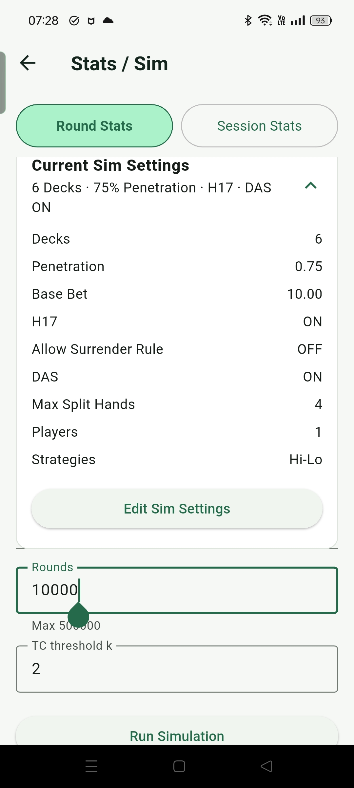
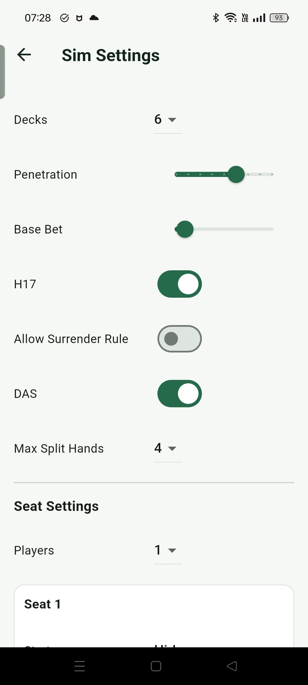
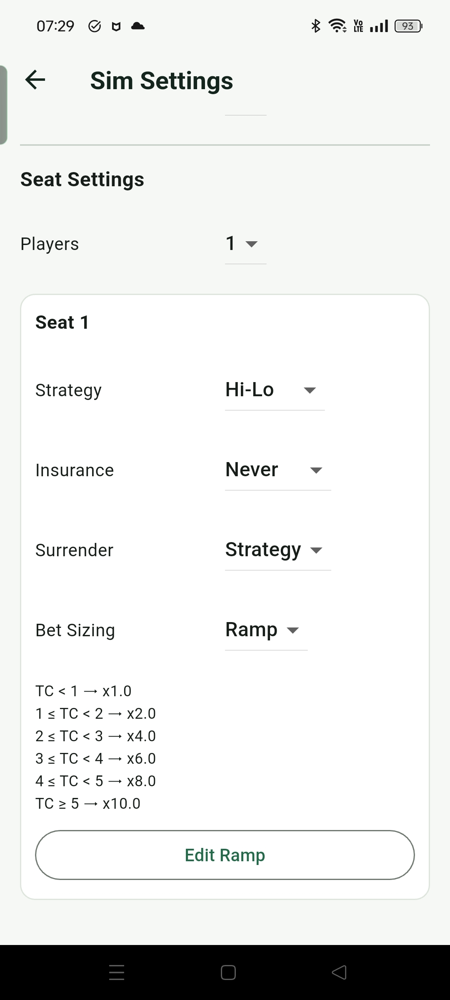
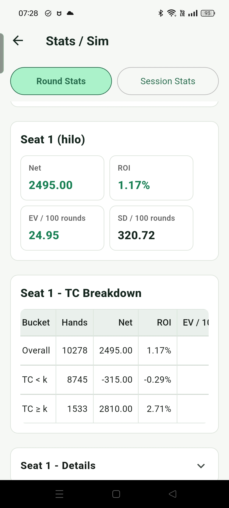
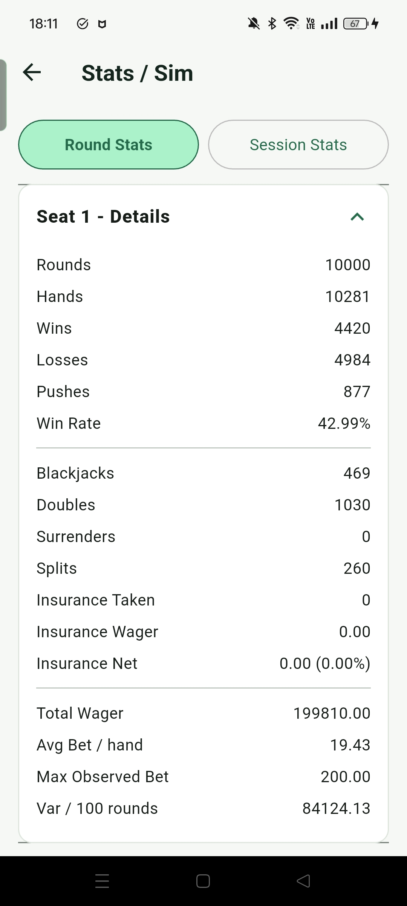
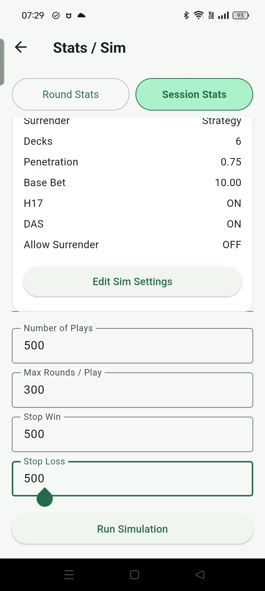
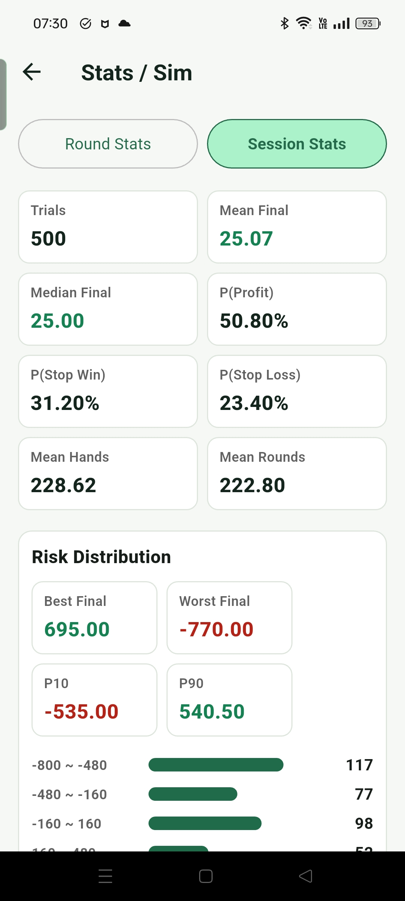

統計
統計功能用大量模擬把 blackjack 的長期結果量化，讓使用者比較不同規則、策略、座位與 session 設定下的 EV、ROI、波動和風險。
這裡的統計是用來理解策略、規則、下注級距和變異數之間的關係，不是保證實際遊玩一定會得到相同結果。Blackjack 的優勢通常很小，但短期波動很大；即使模擬結果顯示某些設定有較好的 EV 或 ROI，真實結果仍會受到牌局波動、桌規、穿透率、桌限、資金和執行穩定度影響。這些數據適合用來學習與比較，不應被解讀成穩定獲利承諾。
Round Stats
Round Stats 的核心概念，是先設定桌面規則與策略，再讓電腦依照這些條件大量模擬牌局。策略可以選 Basic、Hi-Lo 或 Hi-Opt I，也可以搭配不同 Bet Ramp，並決定是否依照策略或 deviation 來處理 surrender、insurance 等決策。模擬局數最多可以設定到 500000 局，完成後再用統計結果比較不同設定的長期表現。
Blackjack 是變異數很大的遊戲，即使跑很多局，結果仍然不會完全等於理論機率。不過從另一個角度看，這也比較接近真實狀況：真實遊戲不是每一段結果都剛好等於 EV，而是會有明顯波動。你可以多跑幾次同樣設定，觀察每次結果之間的差異，理解短期結果和長期期望值之間的距離。
除了模擬局數之外，Round Stats 也可以設定 TC threshold 的 k 值。算牌能變成正 EV，主要來自 True Count 較高時的有利區間；設定 k 值後，結果會拆成 TC 小於 k 和 TC 大於等於 k 的統計，方便比較高 TC 區間和其他區間的差異。
Round Stats 也能設定一桌的玩家數，以及每個玩家使用的策略。這樣可以在同樣規則、同一個牌桌與同一組牌序條件下，比較不同策略的表現，例如不同 Bet Ramp、是否使用 surrender、Basic 和 Hi-Lo 的差異。結果除了淨利、ROI、EV / 100 局與 SD / 100 局之外，也會列出 surrender、insurance、split 次數與輸贏比例等詳細數據，幫助理解不同策略實際遇到的狀況。





Session Stats
Session Stats 是用來模擬比較接近真實遊玩的統計。實際上不太可能一次連續玩幾萬或幾十萬局，也可能遇到資金不足、停損或停利的限制，所以這個模式把模擬拆成一個一個 Play。每個 Play 可以設定最多打幾局、停損金額與停利金額，並用同一套策略設定，例如 Hi-Lo、Bet Ramp、規則和其他判斷條件。
停損停利的判斷是看目前 Play 的累積輸贏是否超過設定值。因為高 TC 時可能會有較大的下注，所以某一手結束後，Final Net 可能會超過停損或停利門檻不少；這比較接近真實情況，而不是剛好停在門檻數字上。
設定要跑多少個 Play 後，Session Stats 會統計每個 Play 的最後結果。結果包含 Final Net 的平均值與中位數、輸贏比例、達到停損或停利的比例，以及平均每個 Play 玩了多少 Hands 和 Rounds。畫面也會提供簡單分布圖，讓使用者快速看出 Play 結束時的盈虧分布。
下方也會保留每個 Play 的簡單總結，包含 Final Net、Rounds、Hands 和 End Reason。這個設計主要是用來輔助停損停利與資金管理決策，比單純看大量 Round Stats 更接近現實。不過 blackjack 本身變異數很大，單次模擬仍然可能和理論 EV 有明顯差距，因此同一套策略建議多跑幾次，觀察結果分布是否穩定。


